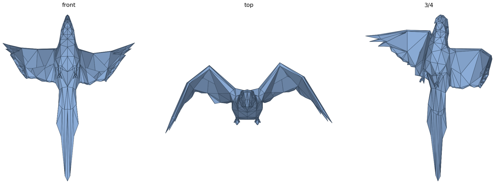
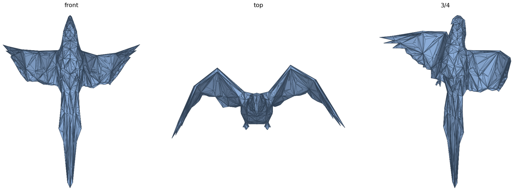
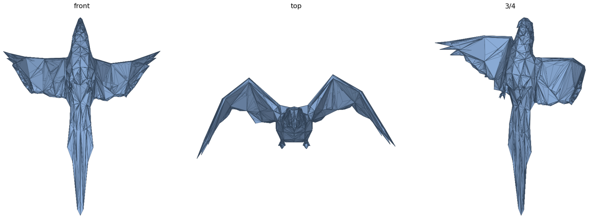

Handle Prediction on Complex Morphologies
Handle predictions on a multi-limbed creature, an abstract shape and an object with thin structures. A handle is placed at the weighted centre of the region it governs, so its position follows the learned part decomposition rather than an arbitrary cluster. Regions that appear to carry no handle are still deformed: under Eq. 6 every vertex is a weighted blend of its surrounding handles, and the Spring Loss keeps adjacent handle distances stable so the parts bend instead of tearing.
Generalization to Non-Humanoid Topologies
Although the motion prior is learned from human capture data, it does not force non-humanoid characters into anthropomorphic postures: the horse walks on four legs. Handles are predicted from the mesh itself and the motion is additionally conditioned on the character's shape. For the bird, one handle covers each wing so it moves as a rigid body, while the Spring Loss imposes a skeleton-like length constraint without a skeleton.
Mesh Quality Comparison
Side-by-side comparison against text-to-3D baselines. Our meshes contain fewer redundant faces and more uniform triangles: QEM decimation collapses the edges that affect the surface least, and isotropic remeshing drives vertex degrees towards six, avoiding sliver triangles that break down under deformation.



Weak-Supervision Ablation on a Non-Human Character
Visual ablation of the Spring Loss and the Adversarial Loss on a jellyfish, a character with no ground-truth motion. The mesh does not collapse, but the artifacts are clearly visible: without the Spring Loss the tentacles stretch and contract, since nothing penalises changes in the rest-pose distances between adjacent handles; without the Adversarial Loss the deformation shows local distortions, since the discriminator no longer pulls handle-driven motion towards the skeleton-driven prior; without both, global structure and local motion are unconstrained.
Skinned Motion Clip
Full clip of a generated horse motion with skinning deformation, provided so that temporal artifacts such as jitter or foot floating can be judged from video rather than static frames.